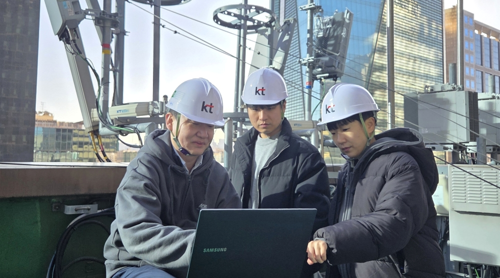
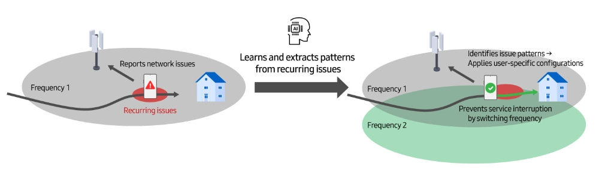

Samsung Electronics và KT Corporation đã xác thực thành công AI-RAN trên mạng thương mại, đẩy nhanh tiến độ phát triển 6G.
vào ngày 11 tháng 12 năm 2025
Samsung Electronics và KT Corporation (KT) thông báo họ đã xác thực thành công công nghệ tối ưu hóa mạng truy cập vô tuyến dựa trên trí tuệ nhân tạo (AI-RAN) trên mạng thương mại của KT, khẳng định rằng dịch vụ ổn định, không bị gián đoạn có thể được cung cấp trong nhiều môi trường thực tế khác nhau. Sau quá trình xác minh dựa trên mô phỏng hoàn tất vào tháng 6, đây đánh dấu lần đầu tiên công nghệ này được trình diễn thành công trên mạng thương mại đang hoạt động.
Khi chất lượng giao tiếp được người dùng cảm nhận trở thành ưu tiên hàng đầu đối với các nhà khai thác viễn thông, Samsung đã và đang phát triển các công nghệ tối ưu hóa AI-RAN để đáp ứng nhu cầu này.
Theo truyền thống, cùng một cấu hình mạng được áp dụng cho tất cả các thiết bị người dùng — chẳng hạn như điện thoại thông minh — được kết nối với trạm gốc. Khi người dùng di chuyển qua các khu vực có tín hiệu yếu hoặc di chuyển với tốc độ cao, kết nối giữa các thiết bị của họ và trạm gốc có thể yếu đi hoặc bị ngắt.
Công nghệ tối ưu hóa AI-RAN được hai công ty xác nhận sẽ tự động áp dụng cấu hình tối ưu cho từng người dùng — thay vì cho toàn bộ mạng — dựa trên điều kiện không dây thời gian thực. Hệ thống tận dụng trí tuệ nhân tạo (AI) để học hỏi từ các vấn đề liên quan đến đường đi và thói quen sử dụng của người dùng, xác định các xu hướng lặp lại để dự đoán các sự cố tiềm ẩn. Bằng cách chủ động ngăn ngừa sự gián đoạn, công nghệ này giúp người dùng tránh được các vấn đề kết nối mà họ đã gặp phải trong quá khứ.
Trung tâm Nghiên cứu Samsung thuộc Samsung Electronics và Phòng thí nghiệm Mạng Tương lai tại Tập đoàn KT đã tiến hành thử nghiệm thực địa với khoảng 18.000 người dùng tại một số khu vực được chọn ở Seongnam, tỉnh Gyeonggi, với các điều kiện môi trường khác nhau. Công nghệ AI-RAN được áp dụng cho những người dùng thường xuyên gặp sự cố gián đoạn dịch vụ, cho phép các nhóm nghiên cứu xác định các mô hình sự cố lặp đi lặp lại và phát triển cấu hình mạng dành riêng cho từng người dùng. Sau đó, các công ty đã so sánh số lần mất kết nối trước và sau khi áp dụng các cấu hình này trên mạng thương mại. Kết quả cho thấy sự giảm đáng kể số lần mất kết nối đối với những người dùng thường xuyên gặp sự cố, cũng như sự giảm đáng kể các sự cố đối với những người dùng khác trong khu vực.
Việc tối ưu hóa AI-RAN sẽ rất cần thiết khi ngành công nghiệp chuẩn bị cho kỷ nguyên 6G, thời điểm dự kiến mức sử dụng dữ liệu sẽ tăng vọt và các mạng lưới phải cung cấp dịch vụ ổn định trên nhiều môi trường truyền thông khác nhau. Vì sự cải thiện chất lượng truyền thông đã được nhận thấy rõ rệt ở cấp độ người dùng, thành tựu này được kỳ vọng sẽ được công nhận là một ví dụ hàng đầu về công nghệ AI-RAN. Trong tương lai, hai công ty dự định mở rộng việc kiểm chứng trên các mạng lưới thương mại khác và tiếp tục phát triển công nghệ 6G.
“Đây là một cột mốc quan trọng cho thấy trí tuệ nhân tạo (AI) có thể cải thiện trải nghiệm người dùng trên các mạng lưới thương mại thực tế,” ông JinGuk Jeong, Phó Chủ tịch điều hành kiêm Giám đốc Trung tâm Nghiên cứu Truyền thông Cao cấp, Samsung Research thuộc Samsung Electronics, cho biết. “Thông qua sự hợp tác chặt chẽ với KT, chúng tôi sẽ tiếp tục định hình và kiểm chứng thế hệ công nghệ truyền thông dựa trên AI tiếp theo.”
“Thành tựu này chứng minh rằng trí tuệ nhân tạo (AI) có thể chuyển đổi hoạt động mạng xoay quanh người dùng,” ông Jong-Sik Lee, Phó Chủ tịch điều hành kiêm Giám đốc Phòng thí nghiệm Mạng Tương lai của Tập đoàn KT, cho biết. “Cùng với Samsung, chúng tôi sẽ tiếp tục phát triển các công nghệ tối ưu hóa tùy chỉnh để cung cấp dịch vụ ổn định, không gián đoạn và thúc đẩy các khả năng cốt lõi của mạng 6G, tạo ra giá trị mới cho khách hàng.”
Samsung đang dẫn đầu sự đổi mới công nghệ 6G dựa trên trí tuệ nhân tạo (AI) thông qua nghiên cứu công nghệ AI-RAN, tích hợp các khả năng AI tiên tiến vào mạng không dây. Công ty sẽ tiếp tục tăng cường hợp tác với các nhà mạng và đối tác trong nước và quốc tế để nâng cao hơn nữa trải nghiệm người dùng trong lĩnh vực truyền thông thế hệ tiếp theo.